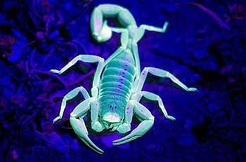
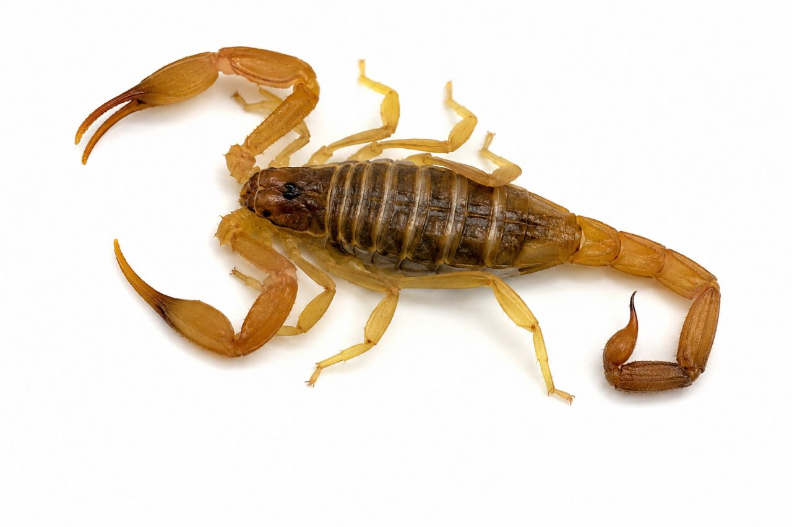

تصور کنید شب از خواب بیدار میشوید تا به دستشویی بروید و ناگهان با یک موجود کوچک و زرهپوش با دمی خمیده و نیشی مرگبار روبرو میشوید که در کفش یا گوشهٔ حمام کمین کرده است. قلب شما از تپش میایستد. این موجود چیزی نیست جز یک عقرب.
عقربها از کهنترین و مقاومترین بندپایان روی زمین هستند که بیش از ۴۰۰ میلیون سال است که در کره زمین زندگی میکنند. این موجودات شبزی و ترسناک، در بسیاری از مناطق ایران، بهویژه استانهای جنوبی، مرکزی و کویری، بهعنوان یکی از مهمترین تهدیدات سلامت عمومی شناخته میشوند. ایران با بیش از ۵۰ گونه عقرب، یکی از غنیترین کشورها از نظر تنوع گونههای عقرب در جهان است و متأسفانه برخی از این گونهها، مانند عقرب گادیم (Hemiscorpius lepturus) و عقرب زرد (Androctonus crassicauda)، از سمیترین عقربهای جهان هستند.
سالانه هزاران نفر در ایران دچار گزش عقرب میشوند که برخی از موارد آن منجر به مرگ یا عوارض جدی و مادامالعمر میشود. کودکان، سالمندان و افراد با سیستم ایمنی ضعیف، بیشترین آسیب را از گزش عقرب میبینند.
اما خبر خوب این است که با آگاهی از روشهای پیشگیری، شناسایی و کنترل، میتوان خطر حضور عقربها را به حداقل رساند و در صورت مشاهده، بهسرعت و بهطور اصولی اقدام کرد.
در این مقاله جامع و تخصصی، شما را با انواع عقربهای سمی ایران، نشانههای حضور آنها، خطرات و عواقب گزش، و مهمتر از همه، روشهای اصولی و تخصصی سمپاشی عقرب آشنا میکنیم. اگر شما هم در مناطقی زندگی میکنید که عقربها در آن شایع هستند، این مقاله میتواند جان شما و خانوادهتان را نجات دهد.
عقربها از رده عنکبوتیان (Arachnida) و راسته عقربسانان (Scorpiones) هستند. آنها هشت پا دارند و با یک جفت چنگال (پنس) و یک دم بندبند که به نیش (تیغه) ختم میشود، قابل شناسایی هستند.
| ویژگی | توضیح |
|---|---|
| اندازه | از ۱ سانتیمتر تا بیش از ۲۰ سانتیمتر، بسته به گونه |
| رنگ | زرد، قهوهای، سیاه، سبز مایل به زرد و حتی نارنجی |
| طول عمر | بین ۳ تا ۲۵ سال (بسته به گونه) |
| تغذیه | شکارچی حشرات، عنکبوتها، هزارپایان و حتی عقربهای دیگر |
| فعالیت | شبزی (در طول روز در شکافها و زیر سنگها پنهان میشوند) |
| تولید مثل | زندهزا (بچههای عقرب پس از خروج از بدن مادر، تا اولین پوستاندازی روی پشت او سوار میشوند). |

تشخیص بهموقع وجود عقربها میتواند از یک فاجعه جلوگیری کند. این نشانهها را جدی بگیرید:
گزش عقرب میتواند عواقب جدی و حتی مرگبار داشته باشد. شدت عوارض به نوع عقرب، مقدار سم، سن و وضعیت جسمانی فرد بستگی دارد.

| نوع عارضه | توضیح |
|---|---|
| درد شدید | اغلب در محل گزش، سوزش و درد شدید و فوری |
| تورم و التهاب | تورم پیشرونده در محل گزش و نواحی اطراف |
| علائم سیستمیک | در موارد شدید: تهوع، استفراغ، تعریق، افت فشار خون، تشنج، فلج عضلانی، ایست تنفسی |
| آسیب به بافت (بهویژه عقرب گادیم) | تخریب بافت، ایجاد زخمهای نکروزه، خونریزی داخلی، نارسایی کلیه |
| واکنش آلرژیک | واکنشهای آلرژیک شدید (آنافیلاکسی) که میتواند کشنده باشد. |
| مرگ | در صورت عدم درمان بهموقع، بهویژه در کودکان و سالمندان |
کنترل عقربها بهدلیل ماهیت شبزی و پنهانکاری آنها، نیازمند روشهای تخصصی و اصولی است. در شرکت سمپاشی نانوفناوران، از روش مدیریت تلفیقی آفات (IPM) برای کنترل عقرب استفاده میکنیم که شامل مراحل زیر است:
اولین گام، شناسایی گونه عقرب، نقاط ورودی و لانههای آنها است. کارشناسان ما با بررسی دقیق محیط، موارد زیر را مشخص میکنند:
بهترین و مؤثرترین راه کنترل عقرب، حذف مکانهای اختفا و منابع غذایی آنهاست. این اقدامات را جدی بگیرید:
در صورت مشاهده عقرب یا آلودگی شدید، سمپاشی تخصصی توسط کارشناسان انجام میشود:
پس از سمپاشی، کارشناسان ما تمام نقاط ورودی را با مواد مخصوص مسدود میکنند و توصیههای لازم را برای جلوگیری از ورود مجدد عقرب ارائه میدهند.
با رعایت این نکات ساده، میتوانید از بازگشت مجدد عقربها جلوگیری کنید:
هزینه سمپاشی عقرب به عوامل مختلفی بستگی دارد:
| عامل | تأثیر بر هزینه |
|---|---|
| مساحت و نوع مکان | منازل مسکونی، ویلاها، باغها، انبارها و مراکز صنعتی هزینههای متفاوتی دارند. |
| شدت آلودگی | آلودگی شدید نیاز به عملیات بیشتر و زمانبرتری دارد. |
| نوع روش | سمپاشی تماسی، طعمهگذاری یا ترکیبی از روشها. |
| دسترسی به نقاط آلوده | در صورت نیاز به سمپاشی سقفهای بلند یا محیطهای بزرگ، هزینه افزایش مییابد. |
| تعداد جلسات | معمولاً یک جلسه کافی است، اما در موارد شدید ممکن است نیاز به بازدید مجدد باشد. |
💡 توصیه: برای دریافت مشاوره رایگان و استعلام دقیق هزینه، با کارشناسان ما تماس بگیرید.
خیر، سموم استفادهشده توسط شرکت نانوفناوران با رعایت کامل استانداردهای بهداشتی انتخاب میشوند. همچنین در هنگام سمپاشی، افراد و حیوانات از محیط خارج میشوند و پس از تهویه کامل، محیط کاملاً ایمن است.
اثر سمپاشی فوری است و عقربهای موجود در محیط بلافاصله از بین میروند. اما برای جلوگیری از ورود مجدد، مقاومسازی محیط ضروری است.
استفاده از سموم و اسپریهای خانگی معمولاً مؤثر نیست و ممکن است خطرناک باشد. شناسایی گونه عقرب و انتخاب سم مناسب نیاز به تخصص دارد. همچنین استفاده نادرست از سموم میتواند برای سلامتی خطرناک باشد.
بله، معمولاً ۲ تا ۴ ساعت باید محیط را ترک کنید تا سموم تهویه شوند. کارشناسان زمان دقیق را به شما اعلام میکنند.
اگر منافذ ورودی بسته شوند و نکات پیشگیری رعایت شود، احتمال بازگشت بسیار کم است. شرکت نانوفناوران خدمات خود را با ضمانت ارائه میدهد.
عقربها یکی از جدیترین تهدیدات سلامت در بسیاری از مناطق ایران هستند و گزش آنها میتواند عوارض جبرانناپذیری به همراه داشته باشد. با این حال، با آگاهی، پیشگیری و استفاده از خدمات تخصصی و اصولی، میتوان خطر را به حداقل رساند و آرامش را به خانه خود بازگرداند.
شرکت سمپاشی نانوفناوران با بیش از ۲۰ سال تجربه و استفاده از پیشرفتهترین روشهای کنترل عقرب، آماده ارائه خدمات تخصصی و تضمینی به شماست. تیم کارشناسان ما با استفاده از سموم استاندارد و تجهیزات مدرن، عقربها را بهطور کامل و قطعی از منزل یا محل کار شما حذف میکنند و محیطی امن و آرام را برای شما و خانوادهتان به ارمغان میآورند.
🚀 همین حالا اقدام کنید:
📞 تماس فوری: ۰۹۱۲۰۷۰۵۷۴۶
💬 درخواست مشاوره رایگان: از طریق واتساپ یا ایتا
🔗 مشاهده سایر خدمات: کنترل آفات مسکونی